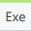
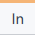
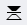

Intel® Graphics Performance Analyzers
Review all textures for the selected events with Graphics Frame Analyzer to determine whether you can optimize texture usage and rendering algorithms.
Using high-resolution textures or multiple textures within a draw can negatively impact your application performance.
To speed up the rendering, you can:
Reduce the physical size of textures
Reduce the number of textures used in the scene, for example, use one texture for a set of objects
Change the texture filtering setting
Reduce the number of texture fetches in the shaders
Graphics Frame Analyzer enables you to experiment with textures and see how your changes impact performance and the final picture.
Experiments help to define whether the selected texture bottlenecks the sampler module. If a sampler block is highlighted red or yellow in the Advanced Profiling mode, there are issues with texture sampling.
Click the draw call or the group of draw calls you are interested in ( ).
The list of resources associated with the selected region appears. Texture names are shown in the following format: T:<texture ID> (<view type><view ID>), for example, T:325 (SRV 0). Textures have four types of views:
Shader resource view (SRV)
Render target view (RTV)
Unordered access view (UAV)
Depth stencil view (DSV)
(Optional) Filter the list of resources ( ):
Use the button to select only textures.
Turn off  Execution resources, as textures are only used as Input or Output.
Click the texture you are interested in ( ).
(Optional) Prepare a texture for analysis:
Open a texture in a new window by clicking the button.
For example, you can view the RTV texture on a separate display and continuously track changes after optimization activities. The texture in a separate window is updated dynamically.
Flip the texture image by clicking the  button.
This is useful if your texture is stored in memory in the reverse order and appears upside down (OpenGL, DirectX).
Select MIP level or the image layer for 3D textures and texture arrays.
You can apply the following experiments to shader resource view (SRV) textures, which are used as input:
Texture 2x2
This experiment replaces the texture with a simple 2x2 pixel texture for the selected events.
Use to identify which texture is causing the issue when you have multiple textures within a call.
To apply the experiment:
Navigate to the texture of interest.
Click the button on the top of the Resources pane.
The experiment replaces the texture with a new one of the same type and with the same name, denoted as [modified].
Clamp to Selected MIP Level
This experiment disables all texture mipmaps that are greater than the selected mipmap level.
Use to check whether your mipmap algorithm works as expected. Find out whether performance is better when you use less detailed textures and how it impacts the render target.
To apply the experiment:
Navigate to the texture of interest.
Select the MIP level on the right of the Resources pane.
Click the button on the top left of the Resources pane.
The experiment replaces the texture with a new one of the same type and with the same name, denoted as [modified].
Texture Format
This experiment changes the texture format (DirectX 11 only).
Use to understand how the texture format influences performance.
To apply the experiment:
Navigate to the texture of interest.
Select the format in the drop-down menu on the top of the Resource Viewer pane.
After you apply experiments, metrics change automatically.
See how time spent on selected draw calls changes on the top left of the Profiling View window. The difference between current and original states is shown in braces.
To see how the render target changes, open the render target view (RTV) resource from the resource list.
To compare a new render target version and the original one, choose one of the modes from the Output Texture Visualization Mode drop-down list:
Export changed textures by clicking the button or pressing Ctrl+S. Depending on the texture format, you can choose between PNG, DirectDraw Surface (DDS), or Khronos Texture (KTX) formats.
Use exported images as key points to save your optimization results, compare, and choose the best version.
Optimize your code based on experiment results.